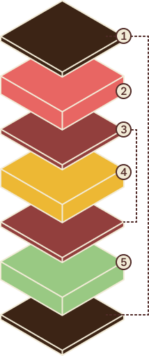

Menu
MenuWhat makes up a rainbow cookie?

1
The Chocolate
Tasty, smooth, adds to the cookie, perfect ratio. Shouldn't be too sweet.
2
The Almond Flavor
Perfect almond taste, not liquor-y or extracty
3
The Jam
At least raspberry, sometimes apricot as well, not too much that it drips from the
cookie.
4
The Cake Layers
layers are similar in height for each layer with a tight crumb, moist but not wet
5
The Color
bright and artificial, but not so much food coloring you can taste it